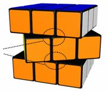
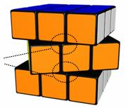

| 1a) | A competition must have the following officials: an organisation team (with one or more members), a WCA delegate, judges, scramblers and score takers. |
| 1b) | The organisation team of a competition is responsible for:
- 1b1) Making all arrangements before and during the competition.
- 1b2) Decisions on disqualification of a competitor for the competition, as described in other articles.
|
| 1c) | The WCA delegate for a competition is responsible for:
- 1c1) Reporting to the WCA board about whether the full WCA regulations were followed during the competition. Reports must be available within one week after the competition.
- 1c2) Reporting to the WCA board about the overall course of the competition, and about incidents. Reports must be available within one week after the competition.
- 1c3) Advising the other officials when needed.
- 1c4) Approving all events and event formats of a competition, before the competition starts and when changes are needed during the competition.
1c5) The WCA delegate for a competition may compete in the competition.
|
| 1d) | Each event must have one main judge.
- 1d1) The main judge for an event is responsible for making sure that the regulations are followed.
- 1d2) Decisions on disqualification of a competitor for an event, as described in other articles.
- 1d3) The main judge for an event must not compete in the event.
- 1d4) The main judge may decide to start a round later than scheduled, but only earlier than scheduled with a clear announcement to all competitors.
|
| 1e) | Each event must have one or more judges.
- 1e1) A judge for an event is responsible for executing the procedures of the event.
- 1e2) All competitors must be available for judging, if needed by organisation team. Penalty: disqualification of the competitor.
|
| 1f) | Each event (except for puzzles that are not scrambled) must have one or more scramblers.
- 1f1) A scrambler for an event is responsible for applying the scrambles to the puzzles.
- 1f2) All competitors must be available for scrambling, if needed by organisation team. Penalty: disqualification of the competitor.
|
| 1g) | Each event must have one or more score takers.
- 1g1) A score taker for an event is responsible for registering the event results.
- 1g2) A score taker for an event may compete in the event.
- 1g3) No changes must be made to the score sheets, without the consent of the main judge.
|
| 1h) | Scramblers and judges for a round of an event may compete in the round.
If scramblers and judges for a round are competing in the round then there are two options:
- 1h1) Option 1: The competiting judges/scramblers must compete before all other competitors, with the judging/scrambling done by non competiting judges/scramblers.
- 1h2) Option 2: Competitors are divided into groups, with different scrambles per group. Non competing judges/scramblers may judge/scramble in all groups. Competiting judges/scramblers must not judge/scramble in their own group.
|
| 1i) | The WCA delegate (before the competition starts) and main judge (before the event starts) must be announced to the competitors. |
| 1j) | Officials can have several roles combined (organisation team, WCA delegate, main judge, judge, score taker, scrambler). |
| 2a) | Any person may be a competitor during a competition, if he:
- 2a1) accepts the WCA regulations;
- 2a2) accepts additional regulations of the competition;
- 2a3) meets the competition requirements, which must be clearly announced before the competition;
- 2a4) is not banned by WCA board.
|
| 2b) | Competitors younger than 18 must first ask their parent(s)/guardian(s) for permission. |
| 2c) | Registrants must provide all required information for their registration to be considered complete. |
| 2d) | All information (except name, country, selected events and competition results) must be used for the competition only, and may only be given to other organisations/persons after permission from the competitor. |
| 2e) | Competitors must be able to show a passport/id-card during registration at the location to prove their identity.
- 2e1) Competitors may represent the country that they have the nationality of.
- 2e2) Competitors with more than one nationality may change representing a country in their first competition of a calendar year.
|
| 2f) | Competitors must obey venue regulations and conduct themselves in a manner considerate of others at all times during the competition and while at the competition venue. |
| 2g) | Competitors must remain quiet when inside the designated competition area. Talking is permitted, but must be kept at a reasonable level, and away from those competing. |
| 2h) | Competitors must be fully dressed. Competitors may dress in jeans, pants, shorts, slacks, skirts, foot-wear, T-shirts or dress shirts. Hats may be worn. Clothes must not display vulgar language or have inappropriate pictures. |
| 2i) | While competing competitors must not use sound equipment, other electronic equipment (like walkmans, dictaphones or additional lighting). |
| 2j) | Disqualification of a competitor for an event may be enforced by the main judge of an event if a competitor fails to show up in time for a round of an event. |
| 2k) | Disqualification of a competitor for a competition may be enforced by the leader of the organisation team for the following reasons:
- 2k1) competitor fails to show up in time for registration for the competition;
- 2k2) competitor is suspect of cheating or defrauding the officials during the competition;
- 2k3) competitor is unruly, disrespectful of other's personal space, or conducting in a way that is unlawful or indecent or for damage to the venue facilities or anyone's personal property within the venue;
- 2k4) competitor interferes or becomes a blatant distraction to others during the competition;
- 2k5) competitor refuses to abide by any of the WCA regulations during the competition.
|
| 2l) | Disqualification occurs immediately or after warning based on the nature of the infraction. |
| 2m) | Competitors are not eligible for any refund of any expenses they incurred to be part of the competition as a result of disqualification. |
| 2n) | Competitors may dispute a ruling in verbal form to the leader of the organisation team. |
| 2o) | Disputes are only possible during the competition, within 30 minutes after the disputed incident happened, and before the next round of the event has started. |
| 2p) | The dispute must be handled by the leader of the organisation team before the next round of the event has started. |
| 2q) | Disputes are only possible within the parameters of the discretion of the organisation team. No disputes are possible regarding the WCA regulations. |
| 2r) | The competitor must accept the final ruling of the leader of the organisation team. Penalty: disqualification of the competitor. |
| 2s) | For competitors with hearing disabilities, judges may replace the vocal instructions with hand signals. |
| 2t) | For competitors with physical disabilities, judges may give help with starting and stopping the timer. |
| 3a) | Cube puzzles are puzzles similar to Rubik's Cube which enable sequential movement of the sides to solve the puzzle, like a 3x3x3 cube, 4x4x4 cube, Megaminx or Square-1. |
| 3b) | Competitors must bring and use their own puzzles. Competitors may borrow puzzles from other competitors, although both competitors must be ready to compete when they are called for to do so. |
| 3c) | Puzzles must be in reasonable working order, so that normal scrambling is possible. |
| 3d) | Competitors must use any normal colour scheme for cube puzzles, as long as the puzzles show 1 colour per face in solved state. For other puzzles competitors must use any variation that has the same moves, positions and solutions as the original puzzle. |
| 3e) | The colours of puzzles must be solid, the same per colour, and clearly distinct from other colours. |
| 3f) | Cube puzzles must either have coloured stickers or coloured tiles. |
| 3g) | Tiles or stickers must not be thicker than 1.5 mm, or the generally available thickness for non cube puzzles. |
| 3h) | Puzzles may be made smoother internally by sanding or using any lubricant. |
| 3i) | No modifications are allowed that enhance the basic concept of a puzzle. Some examples of enhancing the basic concept are: new moves are possible, normal moves are impossible, more colours/pieces are visible, moves are done automatically, more or other solved states. |
| 3j) | Any modifications to a puzzle that result in poor performance or results by a competitor are not grounds for additional attempts in a event. |
| 3k) | Puzzles must be clean and must not have any textures, markings, elevated pieces, damages, or other differences that distinguish one piece from a similar piece. |
| 3l) | Puzzles must be approved by a judge before the competitor competes. |
| 3m) | Cube puzzles must have at most one logo. For 3x3x3 Cube or bigger cube puzzles the logo must be placed on one of the center pieces. |
| 4a) | A scrambler must apply the scrambles. |
| 4b) | Puzzles must be scrambled using a computer-generated random scrambling algorithm, that must be kept secret for all but the scramblers. |
| 4c) | Standard metric for scrambling and solving is Half Turn Metric, where each move of 1 side counts as 1 move, and inner slice moves as 2 moves. |
| 4d) | Cube puzzles must be scrambled with the white (or the lightest colour) face on top and green (or the darkest connecting face) on the front. |
| 4e) | Competitors must solve the same scrambles per round. At the main judge's discretion, scrambling algorithms in preliminary rounds may be randomly chosen from a pool of scrambles, for example to prevent cheating in large competitions. |
| 4f) | The number of moves to scramble a puzzle must be:
|
| 5a) | Puzzle defects are defects of puzzles, like: pieces popping, wires breaking, screws/caps/stickers falling off. |
| 5b) | If a puzzle defect occurs, the competitor may choose to repair the puzzle and continue the solve or choose to stop the solve.
- 5b1) If a competitor chooses to repair the puzzle, then he must only repair the defective pieces, and must not use pieces of other puzzles. Penalty: disqualification of the solve.
- 5b2) During the repairing of the puzzle, the competitor must not intentionally make the position easier to solve than before the defect. Penalty: disqualification of the solve.
- 5b3) If after repairing the puzzle, but still during the solve, the competitor notices that the puzzle is unsolvable, he may disassemble and assemble max. 3 pieces to make the puzzle solvable again.
- 5b4) For blindfolded events a puzzle defect may only be repaired during the solving, and must be done blindfolded. Penalty: disqualification of the solve.
- 5b5) If after the solve non functional parts of the puzzle are still defect (like a center cap of a cube) or not fully rotated (like a 5x5x5 center piece twisted in its spot), but the puzzle is otherwise unambiguously solved, the puzzle is considered solved, under discretion of the main judge.
|
| 5c) | If a competitor has a puzzle defect, this does not give him the right to an extra attempt. |
| 7a) | Competitions may be held on any location, inside or outside. |
| 7b) | Audience should be at least 1.50 meter away from the competitors. |
| 7c) | Lighting of the competition area needs special attention, with preferably white light, so that competitors can easily distinguish the colours of puzzles. |
| 7d) | The temperature of the competition area should preferably be 21 to 25 degrees Celsius. |
| 7e) | The competition area must be smoke-free, and should have a reasonable noise level. |
| 7f) | The timer must be placed directly (no objects underneath it) on a table, desk or console that suits solving while standing. For Solving With Feet the timer must be placed directly on the floor. |
| 7g) | Competitors should preferably solve while standing, but solving while sitting is allowed although the height of the timer may be uncomfortable. |
| 8a) | Guidelines for a competition to become official according to the WCA:
- 8a1) The WCA board must approve the competition.
- 8a2) The WCA regulations must be followed.
- 8a3) There must be a WCA delegate (appointed by WCA board) attending the competition.
- 8a4) The competition must be clearly announced, and should be announced at least a month before the competition starts.
- 8a5) The competition must have at least 12 competitors.
- 8a6) The competition must be accessible for the public.
- 8a7) The StackMat timer must be used for time measurement.
|
| 8b) | An open competition is open to anyone. |
| 8c) | A closed competition may be open to:
- persons with a specific nationality
- citizens of specific geographical areas
- members of specific clubs
- students / employees of specific organisations.
No other distinctions are allowed to declare a competition closed.
|
| 8d) | Competitions may have time limits per round of an event, to make sure that the time schedule can be followed. |
| 8e) | If during a round a competitor does not solve within the time limit, then his solve may (courtesy of main judge) be stopped and disqualified by the judge. The main judge decides whether the competitor may continue the round, for example if the time was exceeded because of a puzzle defect. |
| 8f) | If the WCA regulations are not followed correctly during a competition, then the WCA board may declare the competition, specific events or specific solves unofficial. |
| 9a) | The puzzles for which competitions are governed by the WCA are:
- all puzzles labelled as Rubik puzzles;
- all other puzzles that are played by twisting the sides, so called 'twisty puzzles'.
|
| 9b) | Official speed solving events and formats of WCA are:
- 2x2x2 Cube format 'Best of x', 'Average of 5' (preferred format for final)
- 3x3x3 Cube format 'Best of x', 'Average of 5' (preferred format for final)
- 4x4x4 Cube format 'Best of x', 'Average of 5' (preferred format for final)
- 5x5x5 Cube format 'Best of x', 'Average of 5' (preferred format for final)
- Clock format 'Best of x', 'Mean of 3' (preferred format for final)
- Magic format 'Best of x', 'Average of 5' (preferred format for final)
- Master Magic format 'Best of x', 'Average of 5' (preferred format for final)
- Megaminx format 'Best of x', 'Mean of 3' (preferred format for final)
- Pyraminx format 'Best of x', 'Average of 5' (preferred format for final)
- Square-1 format 'Best of x', 'Mean of 3' (preferred format for final)
|
| 9c) | Official special events and formats of WCA are limited to 3x3x3 Cube:
- 3x3x3 Cube: One-handed format 'Best of x', 'Average of 5' (preferred format for final)
- 3x3x3 Cube: With Feet format 'Best of x' (preferred format for final), 'Mean of 3'
- 3x3x3 Cube: Fewest moves format 'Best of x' (preferred format for final)
|
| 9d) | Official blindfolded events and formats of WCA are limited to 3x3x3, 4x4x4 and 5x5x5 Cube:
- 3x3x3 Cube: Blindfolded format 'Best of x' (preferred format for final)
- 4x4x4 Cube: Blindfolded format 'Best of x' (preferred format for final)
- 5x5x5 Cube: Blindfolded format 'Best of x' (preferred format for final)
- 3x3x3 Cube: Multiple Blindfolded format 'Best of x' (preferred format for final)
|
| 9e) | Other events may be held during a competition, but will be unofficial and therefore not part of the official results of the competition. |
| 9f) | The results of a round are measured as follows:
- 9f1) All timed results under 10 minutes, and corresponding averages are measured in hundredths of a second, with averages rounded to the nearest hundredth of a second (.004 becomes .00, .005 becomes .01).
- 9f2) All timed results over 10 minutes, and corresponding averages are measured in seconds, with averages rounded to the nearest second (0.4 becomes 0, 0.5 becomes 1).
- 9f3) All counted results and averages are measured in natural numbers, with averages rounded to the nearest tenth (.04 becomes .0, .05 becomes .1).
- 9f4) DNF (Did Not Finish) is the result if the solve was disqualified or unfinished.
- 9f5) DNS (Did Not Start) is the result if a competitor skipped an attempt in a round.
- 9f6) In 'Best of x' rounds competitors get x attempts, with the best attempt counting. There may be a combined time limit, example: 30 minutes for 'Best of 1' or 'Best of 2'.
- 9f7) In 'Best of x' rounds a DNF or DNS is the worst result of a competitor, if all results are DNF and/or DNS the best result of the competitor is DNF.
- 9f8) In 'Average of 5' rounds competitors get 5 attempts. Of these 5 attempts, the best and worst attempt are removed, with the average of the remaining 3 attempts counting.
- 9f9) In 'Average of 5' rounds one DNF or DNS is counted as the worst result, with more than one DNF and/or DNS the average is DNF.
- 9f10) In 'Mean of 3' rounds competitors get 3 attempts, with the mean of the 3 attempts counting.
- 9f11) In 'Mean of 3' rounds if the competitor has at least one DNF or DNS the mean is DNF.
- 9f12) In 'Best of x' rounds the order in the results is based on the best result per competitor, with lower meaning better.
- 9f13) In 'Mean of' and 'Average of' rounds the order in the results is based on the best average per competitor, with lower meaning better.
- 9f14) If in 'Mean of' and 'Average of' rounds competitors have the same average result, then the order in the results for these competitors is based on the best result per competitor, with lower meaning better.
- 9f15) Competitors with the same result in a round finish at the same position.
- 9f16) For the 3x3x3 Cube: Multiple Blindfolded event the order in the results is based on:
Highest in the ranking are the competitors who solved all puzzles, among these competitors a larger number means better. For equal results the lower total time means better.
Next in the ranking are the competitors who solved at least one of the puzzles, among these competitors a larger number of solved puzzles means better, and after this a lower number of attempted puzzles means better. For equal results the lower total time means better.
Next in the ranking are the competitors who did not solve at least one puzzle, these competitors all finish at the worst position.
|
| 9g) | Combined rounds are two or three rounds combined during one time frame, where results of earlier rounds are taken into account for next rounds.
- 9g1) Combined rounds can be used to save time in the time schedule.
- 9g2) Whether a competitor proceeds to next phase of a combined round, must be decided on position (best x competitors) or on result (all competitors with a best result under x).
|
| 9h) | WCA must provide WCA world rankings for single and preferred average formats where applicable. |
| 9i) | Results of official WCA competitions must be listed on the WCA world rankings, if the full WCA regulations were applied.
- 9i1) Regional records are recognised for best national/continental/world results.
- 9i2) Regional records are recognised at the end of a round. If a record is broken twice or more in a round, only the latter is recognised.
- 9i3) If the regulations for an event are changed, then the old regional records stand until they are broken under the new regulations.
|
| 9j) | Events must be held only once during a competition. |
| 9k) | If an event is held, then all competitors may participate in that event. |
| 9l) | All competitors must compete in each round during the same time frame. |
| 9m) | Events must have at most four rounds. |
| 9n) | Events with up to 100 competitors must have at most three rounds. |
| 9o) | Events with up to 16 competitors must have at most two rounds. |
| 9p) | For each round of an event, at least one competitor must not proceed to the next round. |
| 9q) | Events may have a B final, open to competitors who did not make it to the final. B finals may be limited to competitors who made it to the semi final. |
| 10a) | Before the competition all competitors must make themselves aware of the solved state per event. |
| 10b) | Only the resting state of a puzzle is considered, when the timer has stopped. |
| 10c) | Puzzles may be in any orientation at the end of the solve. |
| 10d) | All pieces of a puzzle must be fully attached to the puzzle, and in their required positions. See article 5 Puzzle defects. |
| 10e) | Cube puzzles are solved when all sides are restored to solid colour states.
If one or more parallel slices need to be turned to reach the solved state then:
- 10e1) If all slices comply to regulation 10f, then the cube is considered solved, without a penalty.
- 10e2) If one or more adjacent slices do not comply to regulation 10f, then the cube is considered solved, with a penalty of 2 seconds.
In all other cases the solve is disqualified. |
| 10f) | A slice of a cube (and similar puzzles) may be misaligned in the following manner. The inner corner of the misaligned slice (or group) must not cross the inner edge of the connecting slices. For 2x2x2 Cube the slice must not be more than 1/8 turn away from solved state.

Examples no penalty:
    
Example penalty:

|
| 10g) | For Magic (and similar puzzles) the puzzle must be flat on the surface. The maximum elevation of any part of the puzzle at the end of a solve is two tiles higher than flat. |
| 10h) | Other puzzles are solved according to the solved state as defined in the generally accepted goal of the puzzle, with the regulations of the cube solved state applied when applicable. |
| 11a) | Incidents are:
- 11a1) Incorrect execution of event procedures, by officials or competitors.
- 11a2) Interference or distractions or facility distractions (such as power failure, emergency alarm).
- 11a3) Equipment malfunctioning.
|
| 11b) | In case of an incident during an event the main judge of the event must decide about the outcome. |
| 11c) | In case of an incident decisions must be based on the WCA regulations. |
| 11d) | If the WCA regulations are not fully clear or if the incident is not covered by the WCA regulations, then the main judge must make his decision based on fair sportsmanship, after consulting the WCA delegate. |
| 11e) | In case of an incident the main judge may award a competitor another attempt, that replaces the attempt for which the incident happened. |
| 11f) | The main judge, organisation team and WCA delegate must not support their decisions with video or photograph analysis. |
| A1) | Attempts for events categorised under Speed Solving must abide to the following procedure.
- A1a) The time limit is 10 minutes, or less if announced before the event.
|
| A2) | Scrambling
- A2a) The competitor hands over the puzzle to the scrambler and waits in the designated area until he is called to compete.
- A2b) A scrambler scrambles the puzzle according to the regulations in Article 4.
- A2c) The competitor must not see the puzzle between the time when the puzzle is scrambled and the start of the inspection phase.
- A2d) When taking the puzzle from the scrambler, the judge does a quick general inspection of thorough scrambling of the puzzle. In case of doubt the judge contacts the scrambler for a detailed check.
- A2e) The judge places the puzzle onto the StackMat and covers it completely with hand or object.
|
| A3) | Inspection
- A3a) Before starting the solve the competitor may inspect the puzzle.
- A3a1) The competitor has 15 seconds for inspecting the puzzle, but may end the inspection earlier.
- A3b) The judge resets the timer and stopwatch.
- A3b1) When the judge and the competitor mutually agree in a reasonable period that the competitor is ready to begin the inspection, the judge says 'OK?'.
- A3b2) When the competitor replies with 'OK', the judge uncovers the puzzle after 1 second. At the same time the judge starts the stopwatch.
- A3c) During the inspection the competitor is allowed to pick up the puzzle.
- A3c1) The competitor must not manipulate the puzzle in anyway. Penalty: disqualification of the solve.
- A3c2) If the pieces of the puzzle are not fully aligned, then the competitor may fix it, only to align the faces (for cubes the manipulation must not exceed limits given in article 10f).
- A3d) At the end of the inspection, the competitor must place the puzzle back onto the StackMat, in the orientation and position he wishes.
- A3d1) When the inspection time reaches 10 seconds, the judge calls '10 seconds'.
- A3d2) When the inspection time reaches 15 seconds, the judge calls 'STOP'.
- A3d3) The competitor must have put down puzzle before 16 seconds. Penalty: 2 seconds.
- A3d4) The competitor must have put down puzzle before 18 seconds. Penalty: disqualification of the solve.
- A3e) The judge covers the puzzle completely with hand or object.
- A3e1) The judge must not move the puzzle nor make any rotations or manipulations of the puzzle.
|
| A4) | Starting the solve
- A4a) The judge confirms that the timer has been reset and is ready for use.
- A4b) The competitor must place his hands on the timer sensors.
- A4b1) On a StackMat Generation 1 timer, the competitor must place his hands flat on the StackMat timer, with his fingers touching the sensors and palms down. Penalty: 2 seconds.
- A4b2) On a StackMat Generation 2 timer, the competitor must place his hands flat on the elevated area of the StackMat, with his fingers touching the sensors and palms down. Penalty: 2 seconds.
- A4b3) The competitor must not have any physical contact with the puzzle before he starts the solve. Penalty: 2 seconds.
- A4c) When the judge and the competitor mutually agree in a reasonable period that the competitor is ready to begin the solve, the judge says 'OK?'.
- A4d) When the competitor replies with 'OK', the judge uncovers the puzzle after 1 second.
- A4d1) The competitor starts the solve by removing his hands from the timer, thus starting the timer.
- A4d2) The competitor must start the solve within 3 seconds. Penalty: 2 seconds.
- A4d3) The competitor must start the solve within 5 seconds. Penalty: disqualification of the solve.
- A4e) Time penalties for Starting the Solve are not added. There is a maximum of 1 time penalty for Starting the Solve.
|
| A5) | During the solve
- A5a) While inspecting or solving the puzzle, the competitor must not have any communication with anyone other than the judge. Penalty: disqualification of the solve.
- A5b) While inspecting or solving the puzzle, the competitor must not have any assistance from anyone or any object. Penalty: disqualification of the solve.
|
| A6) | Ending the solve
- A6a) The competitor ends the solve by releasing the puzzle and then stopping the timer.
- A6b) It is the competitor's responsibility that the timer is stopped correctly.
- A6c) The timer must be stopped using both hands, with both hands flat and palms down. Penalty: 2 seconds.
- A6d) The competitor must fully release the puzzle before stopping the timer. Penalty: 2 seconds.
- A6e) The competitor must not manipulate the puzzle until the judge has inspected the puzzle. Penalty: disqualification of the solve.
- A6f) The competitor must not reset the timer until the judge has written down the result on the competition sheet. Penalty: disqualification of the solve (courtesy of judge).
- A6g) The judge must inspect the puzzle without manipulating it and must determine whether the puzzle has been completely solved.
- A6h) In case of a dispute the puzzle must not be manipulated until the dispute has been settled, involving the main judge if needed. Penalty: disqualification of the solve (courtesy of judge).
- A6i) Time penalties for Ending the Solve are not added. There is a maximum of 1 time penalty for Ending the Solve.
|
| A7) | Administration
- A7a) If the judge decides the solve was correct, the judge calls 'OK'.
- A7b) The judge writes down the result of the solve on a competition sheet, and signs the sheet with name or signature.
- A7c) The competitor is responsible for checking the result on the sheet, immediately after the judge has written it down.
- A7d) If the judge gives a penalty, then judge calls 'PENALTY'. The competitor must sign the score sheet.
- A7e) If the result is DNF, then judge calls 'NO FINISH'. The competitor must sign the score sheet.
- A7f) At the end of a competitor's round the judge delivers the competition sheet to the score taker.
|
| B1) | Standard procedure is followed as described in Article A (Speed Solving).
Additional/special regulations for Blindfolded Solving are described below.
- B1a) There is no inspection phase.
- B1b) Time limit may be higher than 10 minutes if announced before the event.
- B1c) All times under 10 minutes must be done on a StackMat timer.
- B1d) If it is uncertain that the competitor will stay under 10 minutes, then the judge should use a stopwatch in addition to the StackMat timer. In that case the StackMat time counts for times under 10 minutes, and the stopwatch time for times over 10 minutes.
- B1e) If it is clear that the competitor will exceed 10 minutes, then the judge should use a stopwatch instead of a StackMat timer. In case the competitor solves under 10 minutes, then 10 minutes will be his result.
|
| B2) | Starting the solve
- B2a) When using a stopwatch only, the judge places the puzzle on the surface and covers the puzzle completely with hand or object. The competitor places his hands flat on the surface with the palms down. The competitor must not touch the puzzle. Penalty: disqualification of the solve.
- B2a1) The judge confirms that the stopwatch has been reset and is ready for use.
- B2a2) When the judge and the competitor mutually agree in a reasonable period that the competitor is ready to begin the solve, the judge says 'OK?'.
- B2a3) When the competitor replies with 'OK', the judge uncovers the puzzle after 1 second. At the same time the judge starts the stopwatch.
|
| B3) | Memorisation
- B3a) The competitor memorises the puzzle status. The competitor may pick up the puzzle, but he must not do any moves or manipulations on the puzzle. Penalty: disqualification of the solve.
- B3b) The competitor must not make notes. Penalty: disqualification of the solve.
|
| B4) | During the solve
- B4a) After memorisation the competitor dons the blindfold (provided by judge).
- B4b) The competitor may manipulate the puzzle only after the judge has verified that the competitor has properly donned the blindfold. The judge must not delay the competitor by more than 1 second.
- B4c) The competitor must not look at the puzzle state at any time during the solve. Penalty: disqualification of the solve.
- B4d) The competitor may remove the blindfold again, only before he has manipulated the puzzle.
|
| B5) | Ending the solve
- B5a) When using the StackMat, the competitor ends the solve by releasing the puzzle and then stopping the timer.
- B5b) When using a stopwatch, the competitor ends the solve by placing the puzzle back onto the surface and notifying the judge that the solve has ended. At that moment the judge stops the timer.
- B5c) The competitor may remove the blindfold before the end of the solve, but after removing the blindfold the puzzle must not be manipulated anymore. Penalty: disqualification of the solve.
|